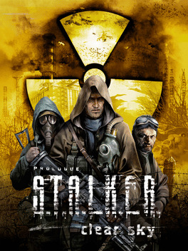
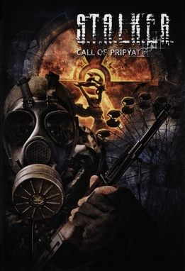

S.T.A.L.K.E.R:SHADOW OF CHERNOBYL

Рік випустку:2008
Ми Мечений який вижив після крушения грузовика смерті та принесли до Сидоровича ,
який вирішає допомогти Меченому, який загубив пам'ять але перед чим він відправляє його на завдвння.
Ми повинні спасти Шустрого, який був у зоні у самих важних моментах.Ми спасаємо його від
смерті від рук бандитів.Потім Сидорович дає коордитнати однієї людини, яка дає кординати Крота, який
показує у підземелля Агропрому у якому ми знаходимо тайник Стрелка-людину ,яку нам треба вбити.
Ми доходим до Бара та спасаємо вчених від найманці.Коли ми повртаємось до тайника ми підриваємось
на розтяжчі.Некій Болотний Доктор дає нам координати тайника у Прип'яті у ,якому знаходиться декодер
та розповідає що ми Стрілок . Яким ми відкриваємо двері в саркофазі та вбиваємо Осознаниє.
S.T.A.L.K.E.R:CLEAR SKY
Рік випустку:2009
Ми найманець на їм'я Шрам ,який переводить вчених з боліт але починається виброс.
Ми вживаємо чим дуже дивуємо Чисте Небо вони нам пояснюють що хтось пішов у центр зони чим дуже
її розізлив ,а ми хоч і виживаємо ,але наш мозок плавиться.Ми як плату за наше спасіння роботаєм yf
Чисте Небо ,тому ми звілбняємо болота від ренігатів та йдемо до рижого лісу.Там ми зустрічаємо Лесника
який допомагає нам знайти Стрілка ,щоб вбити його ,щоб перестали відбуватися виброси. Ми йдемо в погоню
за Стрілком та майже догоняємо його але нас зупиняють сталкери ,які на стороні Стрілка. На ЧАЄС ми доганяємо Стрілка
та стріляємо по йому з ГАУС-пушки чим збиваємо його пси-захист.Нас з усім Чистим Небом Забирає Осознаниє для
свого поєкту S.T.A.L.K.E.R.
S.T.A.L.K.E.R:CALL OF PRIPYAT
Рік випустку:2009
Ми воєний під приктієм на їм'я Дегтярьов,якому потрібно дізнатися чому операція «Фарватер» провалилася
спочатку ми допомагаєм сталкерам на Скадовське та вже на Янове ми збираємо команду щоб пройти у Прип'ять.
Де нас зупиняють воєнні ,але ми показуємо документ що ми воєний під прикритям наші товрищі бісяться що ми їм
про це не розповіли.Ми знаходимо Стрілка ,який говорить що ми тупі тому що під час вибросів місцезнаходжння аномалій
міняється. ми улітаємо разом з Стрілком з зони та дивимось тітри.